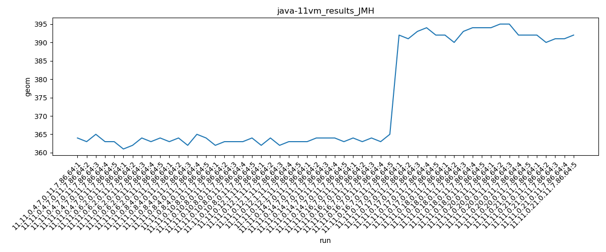
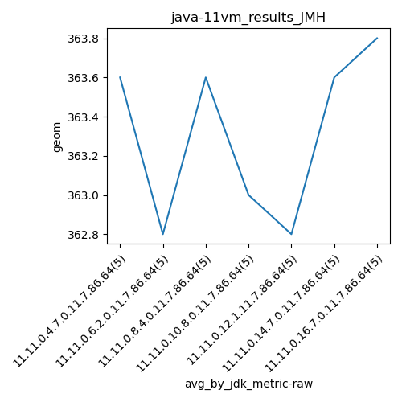
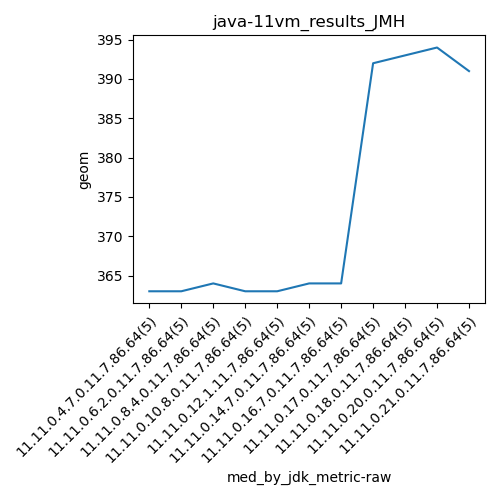
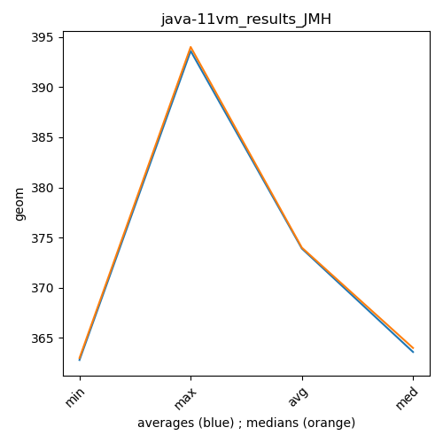

java-11 JMH
Context at bottom
/home/jvanek/git/benchmarks-in-nested-virtualisation-toolchain/final_results/vm_results/vm_results_RADARGUNs1
java-11
JMH
/home/jvanek/git/benchmarks-in-nested-virtualisation-toolchain/final_results/vm_results/vm_results_RADARGUNs3
java-11
JMH
/home/jvanek/git/benchmarks-in-nested-virtualisation-toolchain/final_results/vm_results/vm_results_DACAPO
java-11
JMH
/home/jvanek/git/benchmarks-in-nested-virtualisation-toolchain/final_results/vm_results/vm_results_J2DBENCH
java-11
JMH
/home/jvanek/git/benchmarks-in-nested-virtualisation-toolchain/final_results/vm_results/vm_results_SPECJBB
java-11
JMH
/home/jvanek/git/benchmarks-in-nested-virtualisation-toolchain/final_results/vm_results/vm_results_JMH
java-11
JMH
vm_results_JMH
final score
Expected number of java-11 JDKs: 11
1st avgmed_alljdks_metric:
/home/jvanek/git/benchmarks-in-nested-virtualisation-toolchain/final_results/result_processing.py /home/jvanek/git/benchmarks-in-nested-virtualisation-toolchain/final_results/vm_results/vm_results_JMH geom False
values: [364, 363, 365, 363, 363, 361, 362, 364, 363, 364, 363, 364, 362, 365, 364, 362, 363, 363, 363, 364, 362, 364, 362, 363, 363, 363, 364, 364, 364, 363, 364, 363, 364, 363, 365, 392, 391, 393, 394, 392, 392, 390, 393, 394, 394, 394, 395, 395, 392, 392, 392, 390, 391, 391, 392]

Expected number of iterations: 5
final number of values: 55 out of 55
Pass rate: 100.0%
values: (361, 395, 373.90909090909093, 364)

** accuracy from all jdks and runs
more is better
MIN: 361
MAX: 395
AVG: 373.90909090909093
MED: 364
Relative differences 1:
MIN-MAX: 9.0 %
MIN-AVG: 3.0 %
MIN-MED: 1.0 %
MAX-MIN: -9.0 %
MAX-AVG: -6.0 %
MAX-MED: -9.0 %
AVG-MED: -3.0 %
stored to java-11.properties. sort | uniq that!
2nd avgmed_by_jdk_metric:
values: [363.6, 362.8, 363.6, 363.0, 362.8, 363.6, 363.8, 392.4, 392.6, 393.6, 391.2]

values: [363, 363, 364, 363, 363, 364, 364, 392, 393, 394, 391]

values: (362.8, 393.6, 373.90909090909093, 363.6)
values: (363, 394, 374.0, 364)

** accuracy from all jdks where runs were avged
more is better
MIN: 362.8
MAX: 393.6
AVG: 373.90909090909093
MED: 363.6
Relative differences 1:
MIN-MAX: 8.0 %
MIN-AVG: 3.0 %
MIN-MED: 0.0 %
MAX-MIN: -8.0 %
MAX-AVG: -5.0 %
MAX-MED: -8.0 %
AVG-MED: -3.0 %
stored to java-11.properties. sort | uniq that!
** accuracy from all jdks where runs were medianed
more is better
MIN: 363
MAX: 394
AVG: 374.0
MED: 364
Relative differences 1:
MIN-MAX: 8.0 %
MIN-AVG: 3.0 %
MIN-MED: 0.0 %
MAX-MIN: -9.0 %
MAX-AVG: -5.0 %
MAX-MED: -8.0 %
AVG-MED: -3.0 %
stored to java-11.properties. sort | uniq that!
pass rates:
vm_results_JMH=100.0%
Context:
- vm_results
- JMH